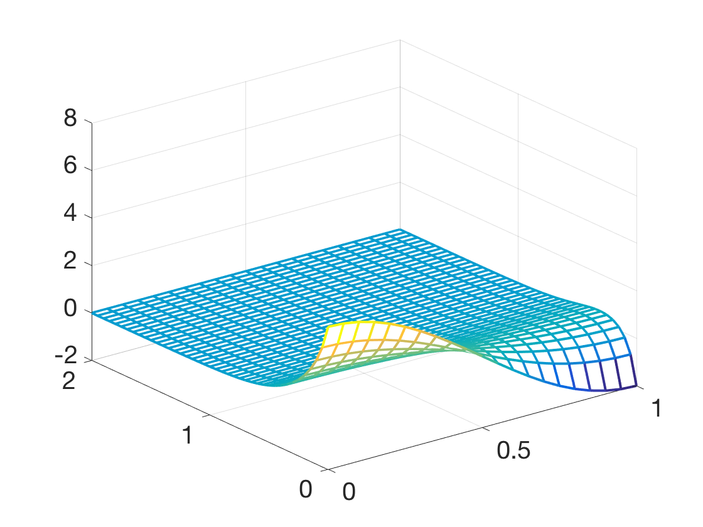
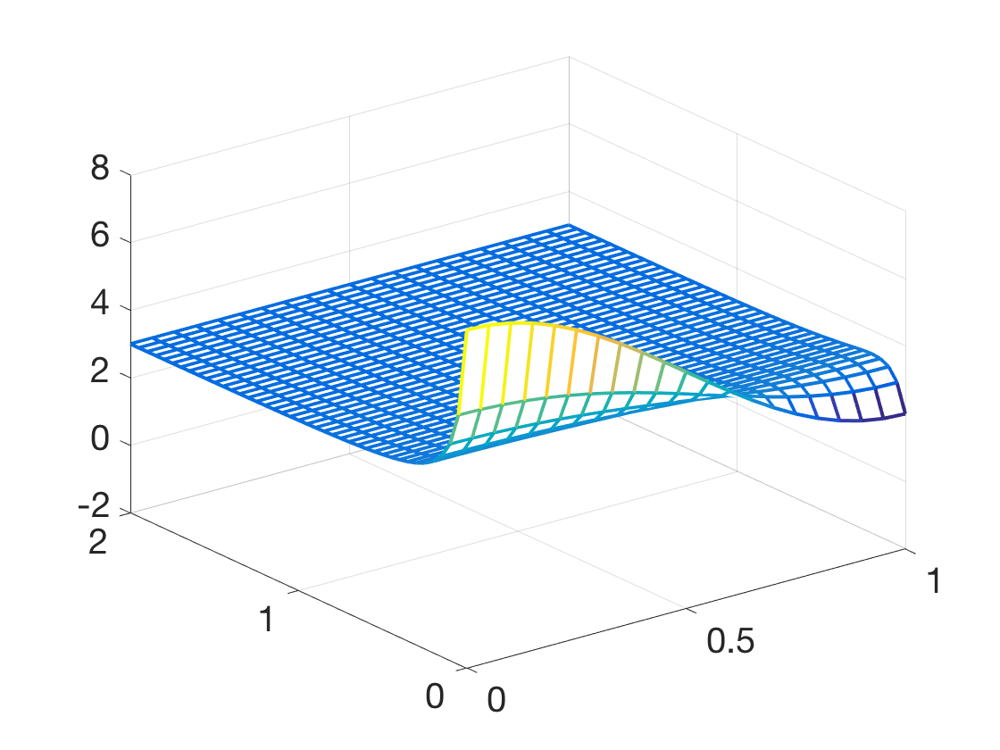

(a) Adapt the


The discretization is
\[\frac{w_{ij}-w_{i,j-1}}{k} = \frac{1}{h^2}\left(w_{i+1,j}-2w_{ij}+w_{i-1,j}\right) +5w_{ij}^2-w_{ij}^3-6w_{ij}\]
or
\[w_{ij}(1+2\sigma-k(5w_{ij}-w_{ij}^2-6))-\sigma(w_{i+1,j}+w_{i-1,j})-w_{i,j-1}=0.\]
The nonlinear equation to be solved is
\[
F_i(z_1,\ldots, z_m)=(1+2\sigma-k(5z_i-z_i^2-6))z_i-\sigma(z_{i+1}+z_{i-1})-w_{i,j-1}=0.
\]
The Neumann boundary conditions imply the first and last equations
\begin{eqnarray*}
F_1(z_1,\ldots,z_m) &=& (-3z_0+4z_1-z_2)/(2h) = 0\\
F_m(z_1,\ldots,z_m) &=& (-z_{m-2}+4z_{m-1}-3z_m)/(-2h) = 0
\end{eqnarray*}
The Jacobian DF has form
\[
\left[\begin{array}{ccccccc}
-3&4&-1\\
-\sigma&1+2\sigma+6k-10kz_2+3kz_2^2&-\sigma\\
&\ddots&\ddots&\ddots\\ \\
\\
&&&-\sigma&1+2\sigma+6k-10kz_2+3kz_2^2&-\sigma\\
&&&&-1&4&-3
\end{array}\right].
\]
The following code fragment can be put into burgers.m to adapt the code to solve the equation.
DF1=zeros(m,m);DF2=zeros(m,m);
DF1=diag(1+2*sigma*ones(m,1)+6*k)+diag(-sigma*ones(m-1,1),1);
DF1=DF1+diag(-sigma*ones(m-1,1),-1);
DF2=diag(-10*k*w1);
DF3=diag(3*k*w1.^2);
DF=DF1+DF2+DF3;
F=-w(:,j)+(DF1+DF2/2+DF3/3)*w1; % Using Lemma 8.11
DF(1,:)=[-3 4 -1 zeros(1,m-3)]; F(1)=DF(1,:)*w1;
DF(m,:)=[zeros(1,m-3) -1 4 -3]; F(m)=DF(m,:)*w1;
The plot on the left is the solution of part (a). Note that the solution is approaching the constant solution
\(u\equiv 0\) for increasing time. Changing the initial condition for part (b) yields the plot on the right, which is
converging to the other stable solution at \(u\equiv 3.\)